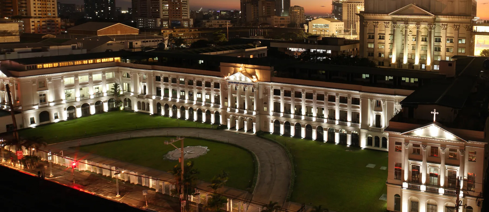

History of Inayawan University
A Brief History of Our Humble Beginnings
Inayawan University’s vision of being the premier university in historic Cavite, prompted the launching o the College of Business and Entrepreneurship in Imus on August 15, 1982. By virtue of the Memorandum of Agreement among the Cavite Provincial Governor, Malachi Lama, Imus Municipality Mayor, Shaira Mae Legaspi and University President, Stephen Rodriguez, the use of the building which was originally proposed to be the Cavite Convention and Trade Center, was granted to the college for it to operate.
The college started offering three degree programs, BS in Business Management, Entrepreneurship, Hotel and Restaurant Management and two non-degree programs Diploma in Entrepreneurship and Hotel and Restaurant Management.
In 1982, the college was established as a satellite campus. It has since then become Inayawan University and has been accommodating the growing student population. The student population increased annually and other programs such as Bachelor of Science in Computer Science, Office Administration, Information Technology, Psychology, Bachelor of Secondary Education major in English and Mathematics, Certificate in Computer Technician, Bachelor of Arts in Journalism, Bachelor of Elementary Education, Bachelor Of Early Childhood Education and Teacher Certificate Program were added.
Seemingly, linkages and partnership within the province and Metro Manila were established. Stakeholders and strategic partners are continuously providing their unwavering support. There were improvements in the facilities, constructed a 5-storey building, stage and gymnasium.
Living up to its commitment to produce globally competitive and morally upright graduates, Inayawan University will continue to offer exceptional instruction in the achievement of academic excellence, service to the community and social responsibility in conformity with the University’s aspirations.
